#030 · 0 sources
FAIR QUESTION LAB
Weird questions. Serious answers.
NEW


 +8moreSee the newest Shorts on the board
+8moreSee the newest Shorts on the board
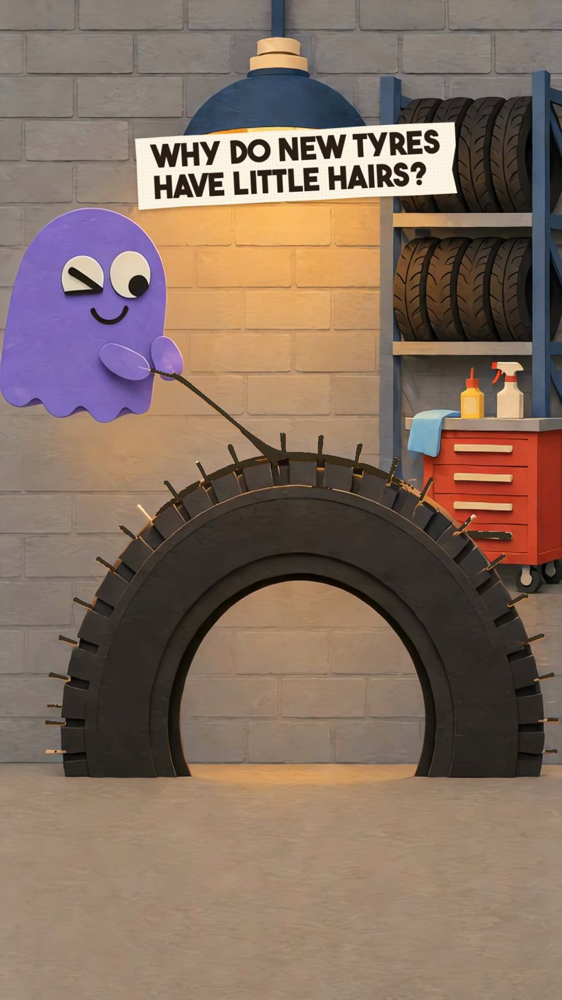
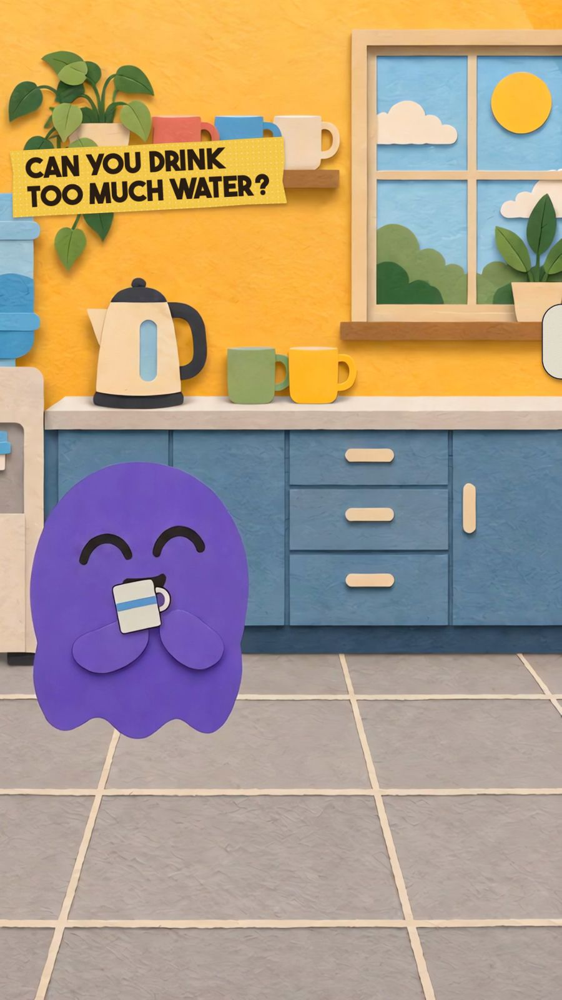
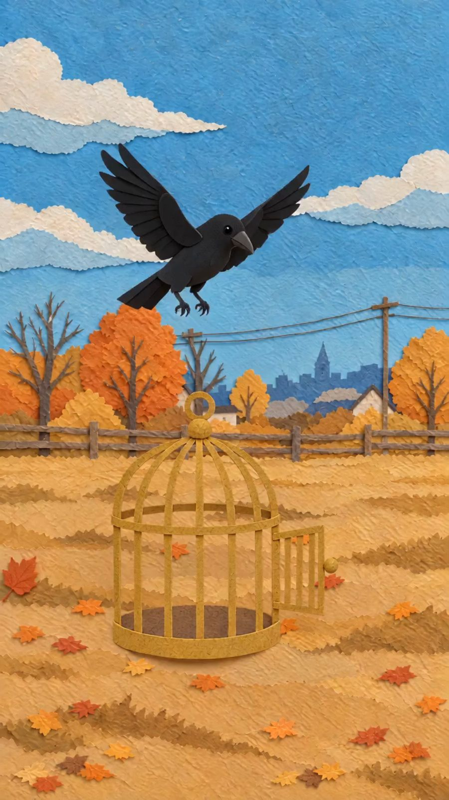
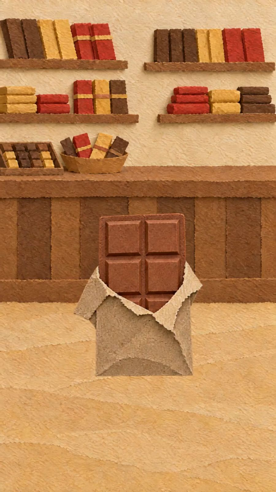
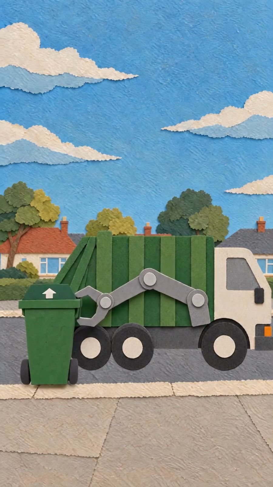
+8moreSee the newest Shorts on the boardWeird questions, serious answers. Whim asks, Dr. Fava checks the facts, and every claim is sourced.
Hello!I'm Dr. Fava. This is Whim. He asks the weird questions; I check the answers.
Scroll into the lab
The board · newest first
Click a card to watch the ShortTap a card to watch the Short
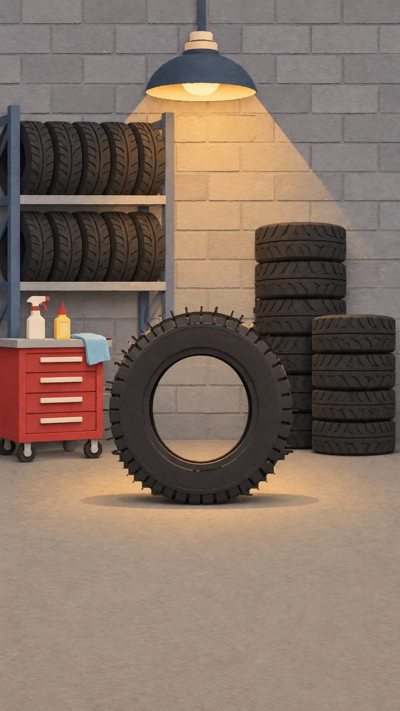
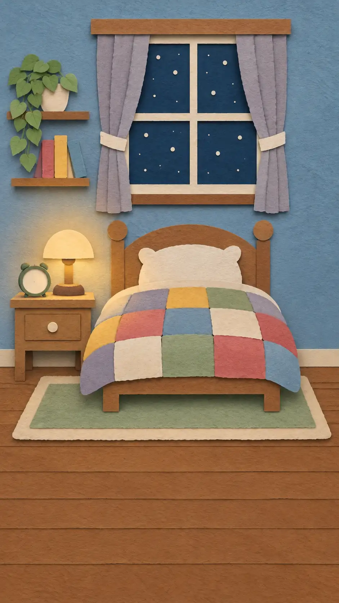
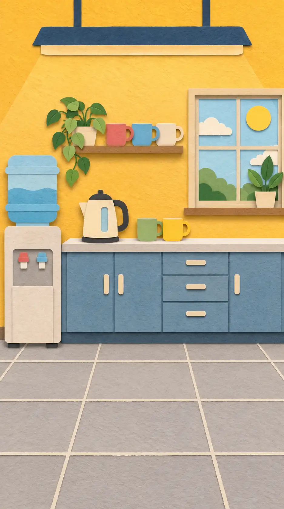
How we check
EVERY CLAIM GETS CHECKED
Dr. Fava checks each claim against the original: the study, the law, the patent. No source, no claim. 19 Shorts checked · 49 sources
#044 · 0 sources
Why Do You Jerk Awake When Falling Asleep?
#017 · 3 sources
Can You Drink Too Much Water in a Day?
Next in the lab
Why Does the Sun Make Me Sneeze?
Mon 23 Nov · 12 pm UK · in
Ask Whim: a question from the archive
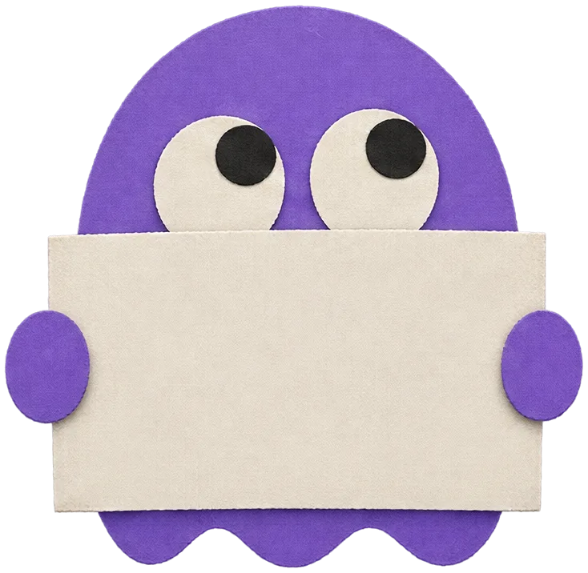
Why Is Everest 29,002 Feet Tall?Some Shorts end with a vote. Comment A, B or C, and the winner becomes a future Short.
The archive
EVERY SHORT, SEARCHABLE
All 19 Shorts so far, newest first, each with its sources. Filter by topic or search for a word.
Body & physicsCar mysteriesEveryday bodyEveryday mysteriesEveryday mysteries / machinesEveryday scienceFood scienceHow it's madeNumber originsWeird lawsWeird laws / foodYour body / food scienceYour body / sleep
The topic map
HOW THE QUESTIONS CONNECT
Every Short is pinned to the science it shares with the others. Follow the red string: dye leads to chemistry, chemistry to chillies, chillies to birds. Point at a card to follow its thread.Swipe each row to see every Short on that thread.
ANIMALS4 ShortsCHEMISTRY4 ShortsEVERYDAY THINGS6 ShortsFOOD5 ShortsLAWS5 ShortsMACHINES4 ShortsPHYSICS2 ShortsPLANET EARTH2 ShortsYOUR BODY6 ShortsWhy Do New Tyres Have Little Hairs?Why Do You Jerk Awake When Falling Asleep?Can You Drink Too Much Water in a Day?Is a Hot Dog a Sandwich? New York Says YesWhy Do Escalators Have Brushes?Is It Illegal to Own a Crow?When Is Chocolate Legally Not Chocolate?Can You Take a Dog on the NYC Subway?How Do Garbage Trucks Pick Up Trash Cans?Why Does Mint Feel Cold? It LiesHow Are Pringles Really Made? Why Is It Illegal to Touch a Seal?
Why Is It Illegal to Touch a Seal? Why Is Your Breath Hot and Cold?
Why Is Your Breath Hot and Cold? Is Rainwater Collection Illegal?
Is Rainwater Collection Illegal? Why Is Everest 29,002 Feet Tall?
Why Is Everest 29,002 Feet Tall?
Why Do You Jerk Awake When Falling Asleep?Can You Drink Too Much Water in a Day?Is a Hot Dog a Sandwich? New York Says YesWhy Do Escalators Have Brushes?Is It Illegal to Own a Crow?When Is Chocolate Legally Not Chocolate?Can You Take a Dog on the NYC Subway?How Do Garbage Trucks Pick Up Trash Cans?Why Does Mint Feel Cold? It LiesHow Are Pringles Really Made?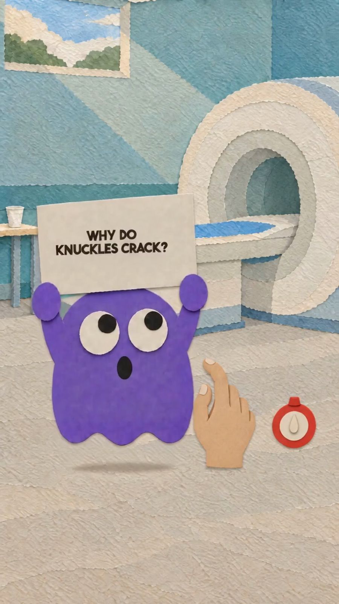
Why Do Knuckles Crack?Why Is It Illegal to Touch a Seal?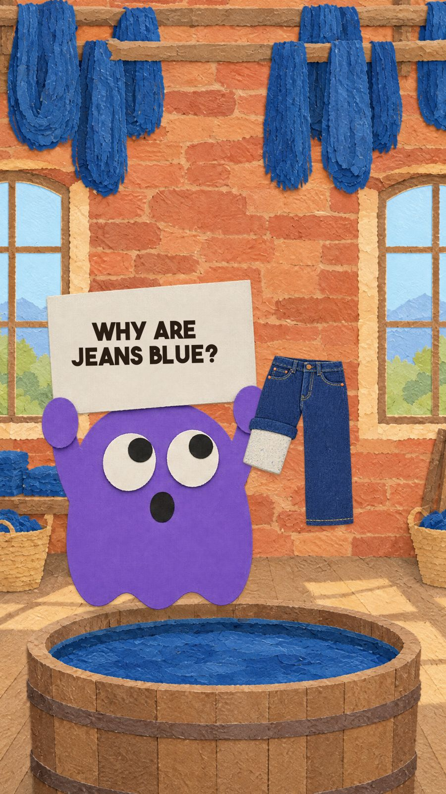
Why Are Jeans Blue but White Inside?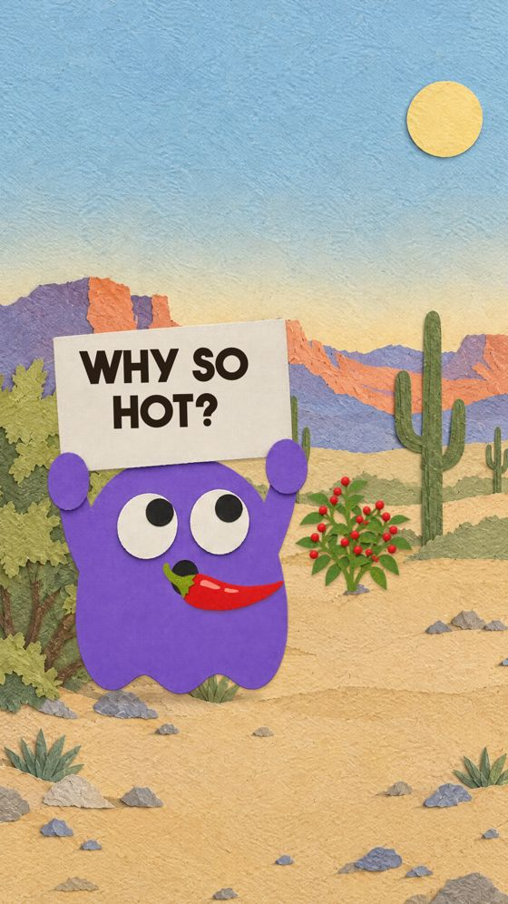
Why Are Chillies Hot? Not for BirdsWhy Is Your Breath Hot and Cold?Is Rainwater Collection Illegal?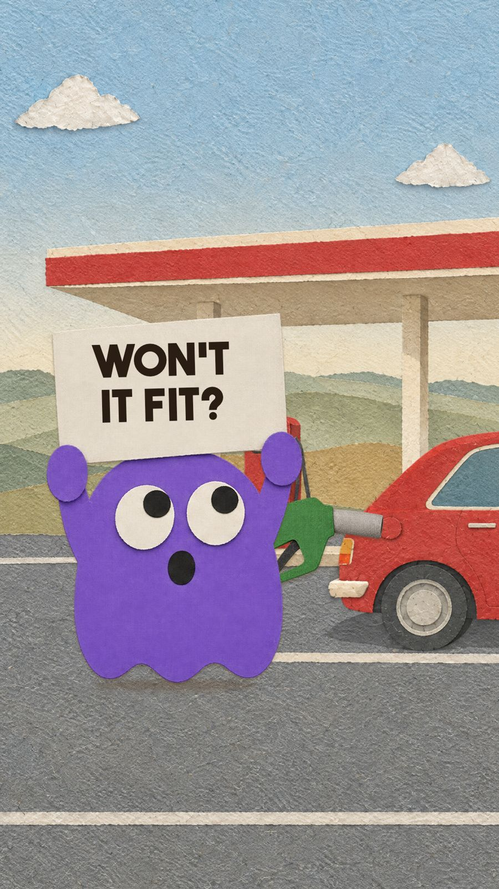
Why a Diesel Nozzle Won't Fit a Gas CarWhy Is Everest 29,002 Feet Tall?EVERYDAY THINGS 6 Shorts
YOUR BODY 6 Shorts
FOOD 5 Shorts
LAWS 5 Shorts
ANIMALS 4 Shorts
CHEMISTRY 4 Shorts
MACHINES 4 Shorts
PHYSICS 2 Shorts
PLANET EARTH 2 Shorts
The team
MEET WHIM AND DR. FAVA
WHIM
Asks the questions. Whim never says a word: he holds up a sign with today's question, then reacts to the answer with his whole body.
DR. FAVA
Checks the answers. A dry, curious bean scientist and the only voice on the channel. Never without his clipboard of sources.
GOT A WEIRD QUESTION?
The best ones are the questions you were too embarrassed to ask. Send yours; Whim reads every one.